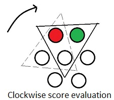

The Atropos Game is a two-player game created at Boston University. It is played on a (roughly) triangular board formed out of circles which may be uncolored, red or blue. On each player's turn, they must color one uncolored circle, adjacent to the circle most recently colored by their opponent if possible. One player is declared the winner when their opponent is forced to color a circle such that a triangle of all three colors is formed.
In this project, our group developed a search algorithm to traverse the space of possible moves in order to play Atropos intelligently. To that end, we implemented an alpha-beta pruning search and a number of static evaluation functions. Alpha-beta search is a variant of minimax search which seeks to prune branches of the search space aggressively.
The rules of the game are as follows:
The project uses Maven to build, and can be compiled by running the following command from the root directory of the jar:
mvn compile
To run an Atropos tournament with a board size of 6 and SimplePlayer , run the following from target/classes after building:
java AtroposGame 6 "edu.bu.SimplePlayer"
The internal, driver object for evaluating the current game state and selecting a move. This object implements the alpha-beta pruning minimax search algorithm as well.
Minimax is a decision rule used in decision theory, game theory, statistics and philosophy for minimizing the maximum possible loss. It involves traversing a game tree up to a specified depth, and evaluating the payoff of each leaf node. The highest value is then recursively pushed up the game tree to the root node, telling you the payoff of the corresponding move given both players try their best to win.
To minimize the visited nodes and thereby cut calculation time, alpha-beta pruning can be applied. Alpha-beta pruning is a search algorithm which seeks to reduce the number of nodes that are evaluated in the search tree by the minimax algorithm. It keeps track of the highest payoff a certain branch gives and stops evaluating another branch of the same level when at least one move within that branch gives a lower payoff than the stored value. This way, not all nodes and subbranches are evaluated unless the best moves reside on the nodes that are evaluated last.
A ScriptPlayer that employs a defensive Atropos strategy with a seven-move lookahead. This player employs three evaluation techniques to get into positions that are safer and more open. The evaluator first counts the number of open spaces and adds value for each uncolored circle. This places a priority on children that will put the player in a more open area away from possible losing situations. The second evalutation is of the colored neighbors in the area. The value is decremented for every neighbor that is a different color. This tries to prevent the situation where the player is surrounded by multiple different colors which could cause a losing condition. The final evaluation is of neighbors that are of the same color. Value is added anytime a neighbor is found that matches the color of the current move. This move is favored as it pushes the player towards areas with the same color to prevent a losing condition. All these evaluations create a player that will avoid small areas of varying colors.
A ScriptPlayer that employs a defensive Atropos strategy with only a two-move lookahead. This player uses the same static evaluator as the Deep Player. The only difference is the lookahead.
A ScriptPlayer that employs an aggressive Atropos strategy with a seven-move lookahead. This player uses three evaluation techniques to drive the game into areas that will promote a losing situation. The evaluator first counts the number of neighbors that are colored and adds value for each neighbor. This makes the player choose areas of the board that have few spaces open which may lead to a losing situation. The second evaluation is of the relationship between the neighbors. Each neighbor is compaired to its immediate neighbor and value is added if they are different. This pushes the player into areas with varying color which should lead to a faster losing condition. The final evaluation of this player is the color difference between the neighbor and the current play. If the neighbor is a different color from the color we are playing in a circle then value is added. This makes the player choose areas where it does not lose, but is surrounded by varying colors. These evaluations create a player that forces play into areas with varying color and few spaces.
A ScriptPlayer that employs a mixed Atropos strategy with a seven-move lookahead. This player uses three evaluation techniques that are similar to the DefensivePlayer. The first evaluator is the same as the DefensivePlayer in that it adds value for uncolored neighbors, but in this case the uncolored circles are weighted with a larger value to make them more appealing. The second evaluator is similar to the JustinPlayer in that it adds value where the neighbors are different. The difference is that more value is added for these circles, but only half as much as the uncolored circles. The final evaluator is the opposite of the JustinPlayer in that it subtracts value where there are neighbors with a different color. This hybrid approach attempts to create a more balanced player.
A mini parser combinator-inspired library to read Atropos game states. Parser combinators work by defining composable grammer components, like character literals, and generic methods for combining them to create complex and flexible parsers. The implementation in this project defines combinators that correspond to simple sequences, choice and Kleene star.
The strategy employed is described below.
Static Evaluator
Scans for the number of playable circles adjacent to the circle colored by the last move.
If there are no playable circles,
it returns a decent score as it is hard for the competitor
to setup a trap on an open board.
If there exist playable circles,
for every circle A that can be filled by the competitor,
it retrieves the colors of the six neighbors of A.
for every neighbor of A,
it computes the score of A by using
a clockwise score evaluation.
it then reports the best possible score for the competitor amongst
those of all such circles A.
Clockwise score evaluation
initialize score to 0
retrieve all neighboring colors of A.
if any of the neighbors of A are colored green,
change the value from 3 to 5 // Thus Red = 1, Blue = 2, Green = 5
for every two consecutive neighbors X and Y with different colors,
initialize possible colors index k
add the color values of X and Y
and subtract it from the sum of all colors // Sum of all colors = 8
and set the value of the resulting
color(third color) in the index k to 0 // This can be done any number of times.
indicating this color is disallowed.
for all remaining possible colors C for node A
(specified int he index k)
subtract the value of color C from the score.
return score 
//From the above it is clear that the range of score is [0, -1, -2, -5, -3, -7, -8] //A score of 0 indicates that there are no possible colors left for the competitor. //Hence, making the current move for the current player a winning move. //A score lesser than 0 indicates the best possible move by the competitor. //This static evaluator has been designed with the assumption that limiting the //possibilities for the competitor and filling up the circles with most number of //possibilties at the same time leads to the success of the current player. //Script player using this evaluator against the random player //on a board size of 7 won the game 9/10 times during the tests.
| Player1 vs Player2 | DeepPlayer | JustinPlayer | HowellPlayer | AbhinayPlayer | SimplePlayer | Default Player | Average Score |
| DeepPlayer | 0.3 | 0.6 | 0.5 | 0.3 | 0.7 | 0.6 | 0.50 |
| JustinPlayer | 0.6 | 0.3 | 0.7 | 0.5 | 0.6 | 0.7 | 0.56 |
| HowellPlayer | 0.4 | 0.6 | 0.5 | 0.6 | 0.5 | 0.6 | 0.53 |
| AbhinayPlayer | 0.6 | 0.6 | 0.5 | 0.5 | 0.0 | 0.7 | 0.48 |
| SimplePlayer | 0.6 | 0.7 | 0.6 | 1 | 0.4 | 0.5 | 0.63 |
The above scores are generated by playing each of the players against themselves and the rest of the players. Each score is based on a ten round tournament between each "player1" (each row) and "player 2" (each column).